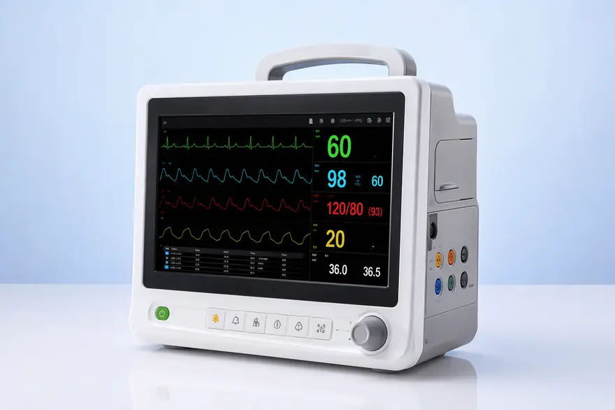
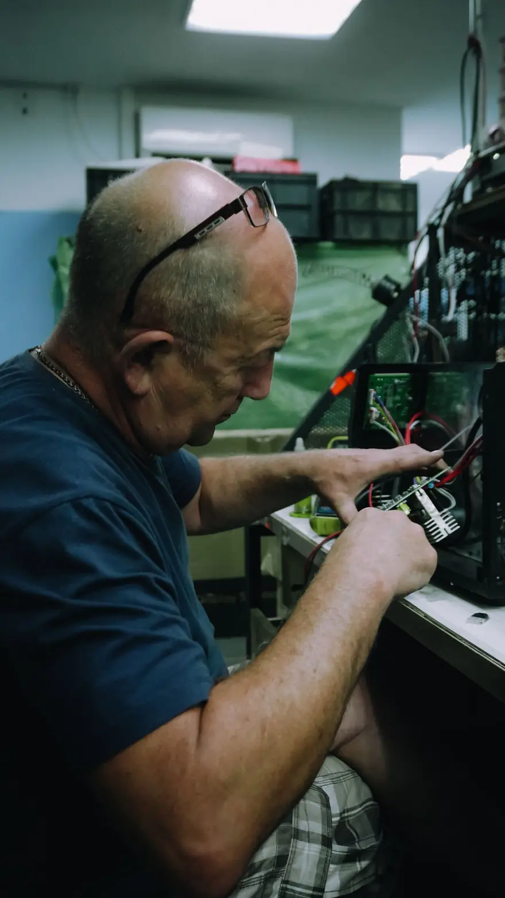

The Connected Ward: What 10,000 Devices Taught Us About Uptime
After five years of fleet telemetry across 40 countries, the patterns are unmistakable — and they change how hospitals should buy, deploy and maintain equipment.
Engineering notes, clinical perspectives and procurement guidance from the people who build and service medical technology.
After five years of fleet telemetry across 40 countries, the patterns are unmistakable — and they change how hospitals should buy, deploy and maintain equipment.





One concise briefing for biomedical and procurement teams. No noise, no spam.